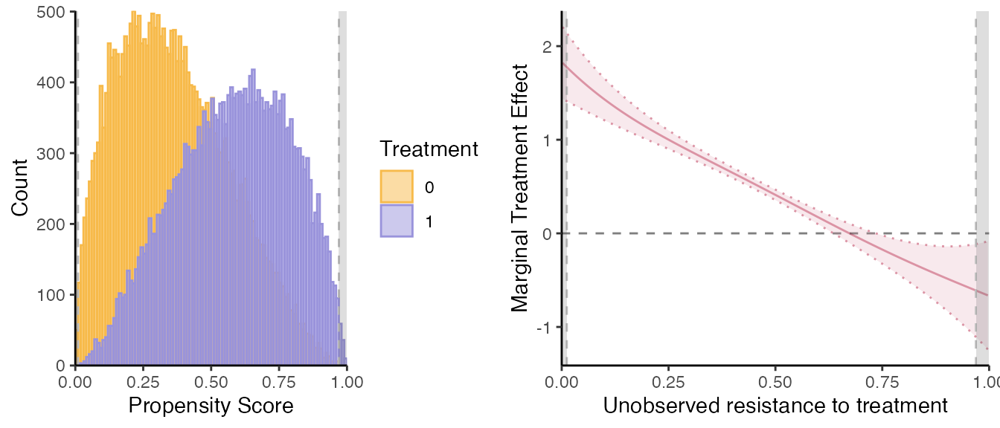
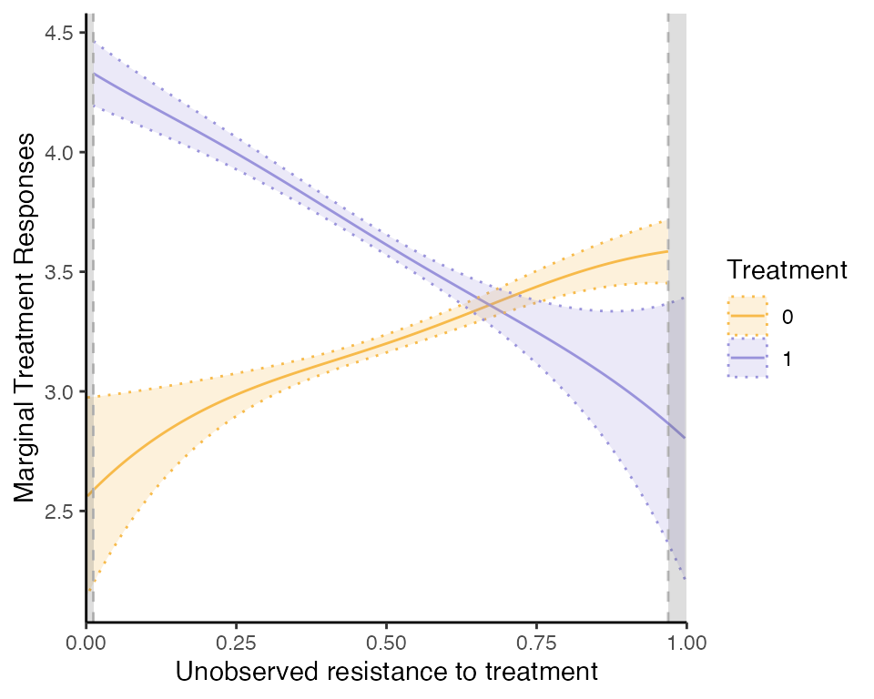
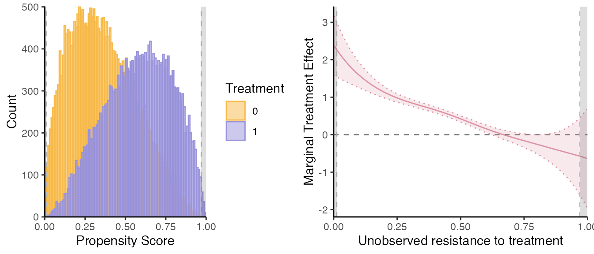
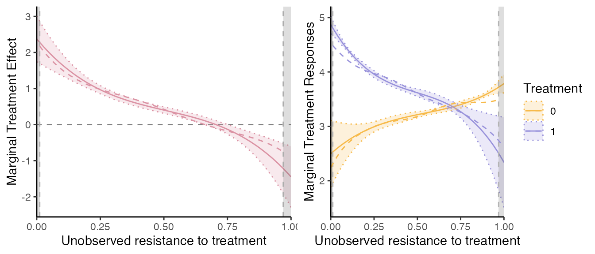
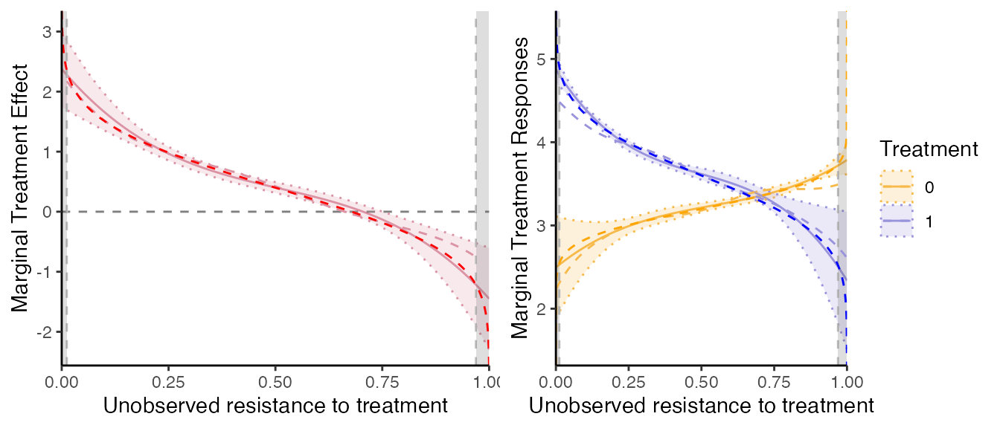
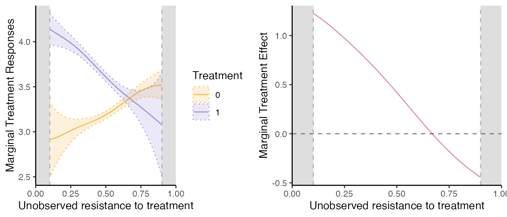

Estimator Performance: general heterogenous treatment effect model
Christophe Bruneel-Zupanc
Last modified: 2024-07-22
semiIVreg_heterogenousTE.RmdLet us compare the performance of the semi-IV estimator in a generalized Roy model with heterogenous treatment effects. The simulation specification comes from the Appendix of Bruneel-Zupanc (2024) (Monte Carlo with Heterogenous treatment effect). It is close to the counterpart standard IV simulated Roy models used in James J. Heckman, Urzua, and Vytlacil (2006) or James J. Heckman and Vytlacil (2007).
Simulate data
We simulate generalized Roy models using the
simul_data()function. See the documentation of the function
for details about the model. Depending on the chosen parameters, we can
simulate a model with homogenous/heterogenous treatment effects, as well
as with valid IVs eventually. That’s what we will do here. In every
simulation we do not include covariates (set all their effect to 0), but
these can be easily included.
# Model
library(semiIVreg)
#> KernSmooth 2.23 loaded
#> Copyright M. P. Wand 1997-2009
#> Loading required package: zoo
#>
#> Attaching package: 'zoo'
#> The following objects are masked from 'package:data.table':
#>
#> yearmon, yearqtr
#> The following objects are masked from 'package:base':
#>
#> as.Date, as.Date.numeric
N = 50000; set.seed(1234)
# Specification
model_type = "heterogenous"
param_error = c(1, 1.5, 0.5, 1.5) # var_u0, var_u1, cov_u0u1, var_cost (the mean cost = constant in D*) # if heterogenous
param_Z = c(0, 0, 0, 0, 1, 0.8, 0.3) # meanW0 state0, meanW1 state0, meanW0 state1, meanW1 state1, varW0, varW1, covW0W1
param_p = c(-0.2, -1.2, 1, 0, 0, 0) # constant, alphaW0, alphaW1, alphaW0W1, effect of state, effect of parent educ
param_y0 = c(3.2, 1, 0, 0) # intercept, effect of Wd, effect of state, effect of parent educ;
param_y1 = c(3.2+0.4, 1.3, 0, 0) # the +0.2 = Average treatment effect; effect of W1, effect of state, effect of parent educ;
param_genX = c(0.4, 0, 2)
data = simul_data(N, model_type, param_y0, param_y1, param_p, param_Z, param_genX, param_error)semi-IV regression
Let us apply directly the semiivreg()function. Compute
the MTE and MTR for a reference individuals with average value of the
semi-IVs, i.e.,
here. Remark: the
depend on
and
,
so always need to pick a reference individual. By default,
semiivreg computes the average individuals (for the
continuous/binary covariates and semi-IVs), and takes the ‘reference
level’ for factor variables.
In terms of estimation method, by default, semivreg()
estimates the second-stage with local polynomial regression, in the
spirit of the double residual regression for partially linear models of
Robinson (1988). This is specified by
using the default est_method="locpoly". This estimation as
the advantage of being robust to misspecification of the control
function
functional form.
semiiv = semiivreg(y~d|w0|w1, data, ref_indiv = data.frame(w0=0, w1=0))
#> Caution: the standard errors around the plot are not correct (underestimated) because of the multiple stages. For proper standard errors, run the bootstrap in semiivreg_boot().
Let us report also the marginal treatment responses (MTR):
mte_plot = semiiv$plot$mte;
mtr_plot = semiiv$plot$mtr;
mtr_plot
Attention: all the standard errors reported are wrong (too
narrow)! They do not take into account the fact that the
propensity score is estimated. For locpoly estimation (the
default), these are simply the standard errors around
,
they do not take into account the error in the effect of the covariates.
To get proper standard errors, one should use the bootstrap.
Other options: to speed things up (especially useful in the first
residual regression), can use fast_robinson1 = TRUE (for
the 1st residual regression of
,
and
on
)
and fast_robinson2 = TRUE (for the second residual
regression). The fast_robinson uses the
locpoly() function from KernSmooth package,
which is much faster than the default routine we implemented. It has
several drawbacks though: (i) only implemented for
kernel="gaussian", (ii) does not compute standard errors
around
estimates (but anyway, these are not completely correct), (iii) cannot
use external weights for the data.
Direct effect of the semi-IVs.
Also estimates the effect of the semi-IV on their respective potential outcomes. To see these:
summary(semiiv$estimate$est0)
#>
#> Call:
#> lm(formula = formuladx, data = residd, weights = weightsd)
#>
#> Residuals:
#> Min 1Q Median 3Q Max
#> -3.7603 -0.6498 -0.0060 0.6563 3.6457
#>
#> Coefficients:
#> Estimate Std. Error t value Pr(>|t|)
#> w0 0.996692 0.008595 116 <2e-16 ***
#> ---
#> Signif. codes: 0 '***' 0.001 '**' 0.01 '*' 0.05 '.' 0.1 ' ' 1
#>
#> Residual standard error: 0.9762 on 26778 degrees of freedom
#> Multiple R-squared: 0.3343, Adjusted R-squared: 0.3343
#> F-statistic: 1.345e+04 on 1 and 26778 DF, p-value: < 2.2e-16
summary(semiiv$estimate$est1);
#>
#> Call:
#> lm(formula = formuladx, data = residd, weights = weightsd)
#>
#> Residuals:
#> Min 1Q Median 3Q Max
#> -4.5990 -0.7789 -0.0022 0.7614 4.3267
#>
#> Coefficients:
#> Estimate Std. Error t value Pr(>|t|)
#> w1 1.287222 0.009057 142.1 <2e-16 ***
#> ---
#> Signif. codes: 0 '***' 0.001 '**' 0.01 '*' 0.05 '.' 0.1 ' ' 1
#>
#> Residual standard error: 1.14 on 23220 degrees of freedom
#> Multiple R-squared: 0.4652, Adjusted R-squared: 0.4652
#> F-statistic: 2.02e+04 on 1 and 23220 DF, p-value: < 2.2e-16
# To be compared with:
param_y0[2]; param_y1[2]
#> [1] 1
#> [1] 1.3Notice that these standard errors are biased because they do not take into account that the propensity score is estimated.
Standard errors.
To get proper standard errors of the MTE/MTR and effects of the
semi-IVs with the default "locpoly"estimation method, use
the bootstrap with the function semiivreg_boot(). This
takes longer to estimate though.
Bandwidth Specification.
By default, with est_method="locpoly", if no bandwidth
is provided, the bandwidth are computed using the
bw_method. The default bw_method is
simplistic: it picks the bandwidth as the specified fraction (1/5th) of
the range of the support (rounded to the 3rd digit). You can set
bw_method to any number (between 0 and 1) to pick the
bandwidth as a function of the support automatically.
One can also implement optimal bandwidth selection methods,
from the package nprobust (see Calonico, Cattaneo, and Farrell (2019)). In
particular, bw_method = "mse-dpi" and
="mse-rot" implement the optimal (constant) bandwidth which
minimizes the (integrated) mean squared error of the
function, using either direct plug-in (dpi) or rule-of-thumb (rot)
formula. For more details, see Calonico,
Cattaneo, and Farrell (2019) or Fan and
Gijbels (1996), or Wand and Jones
(1994). Later updates of the package will allow for variable
bandwidth (as already implemented in nprobust). Notice that
in the second residual regression of Robinson, we want to estimate the
derivative of the local polynomial function, so we find the
optimal bandwidth for this derivative, hence the use of the plug-in and
rule-of-thumb methods, which are well suited for this (see Fan and Gijbels (1996)). The estimation of the
optimal bandwidth on large sample can take a long time (exponential
increase with sample size). So, by default we specify
bw_subsamp_size = 10000 such that the optimal bandwidth is
computed on a “small” subsample of size 10,000. Requires to
set.seed() before running semiivreg for
replicability. Set it to NULL (or to some very large
values) to compute the bandwidth on the full sample.
Alternatively, one can pre-specify some of the bandwidth directly, as
shown below. The parameters bwd are the bandwidth for the
first residual regression of
and
(and
)
on
,
that estimates respectively
,
and
,
in order to get the effects of the semi-IVs on their potential outcomes.
For
and
,
the order of the variable depends on the order specified in the original
formula. Be sure to match the variables in the correct
order (be careful with factor for example). One way to
check is to first run without specifying the bandwidth and then checking
the order of the variables in semiiv$estimate$est0 and
semiiv$estimate$est1.
If one specifies only one value in bw0 and bw1, it will be applied to
all the covariates.
bw_y0, bw_y1 are the bandwidth for the
second residual regression, for
(MTR0)
and
(MTR1) respectively. They are important since they govern the smoothness
of the MTR, and thus of the MTE function. bw_y0 also serves
as the bw for the local-IV estimation of the MTE directly.
Let us check the bandwidth from the previous computation (default was 1/5th of the support rule).
semiiv$bw
#> $bw0
#> [1] 0.199 0.199
#>
#> $bw1
#> [1] 0.199 0.199
#>
#> $bw_y0
#> [1] 0.199
#>
#> $bw_y1
#> [1] 0.199
#>
#> $bw_mte
#> [1] 0.199
#>
#> $bw_method
#> [1] 0.2Re-estimate the model with optimal bandwidth selection
(mse-dpi rule) (print_progress=TRUE is a
reporting option to see the progress of the function).
set.seed(1234)
semiiv = semiivreg(y~d|w0|w1, data, ref_indiv = data.frame(w0=0, w1=0),
bw_method = "mse-dpi", bw_subsamp_size=10000,
print_progress=TRUE)
#> Estimating first stage... First stage estimated.
#> 2nd stage: Estimating MTR and MTE...
#> D= 0, Robinson 1st residual regression of X on P...
#> Progress: 1/2 Progress: 2/2 D= 1, Robinson 1st residual regression of X on P...
#> Progress: 1/2 Progress: 2/2 Robinson 2nd stage: Bandwidth Selection... Robinson 2nd stage: Estimation of k0(v) and k1(v)...
#> Estimation complete.
#> Caution: the standard errors around the plot are not correct (underestimated) because of the multiple stages. For proper standard errors, run the bootstrap in semiivreg_boot().
semiiv$bw
#> $bw0
#> [1] 0.08202580 0.04809258
#>
#> $bw1
#> [1] 0.1326332 0.1089366
#>
#> $bw_y0
#> [1] 0.1261527
#>
#> $bw_y1
#> [1] 0.1261527
#>
#> $bw_mte
#> [1] 0.1261527
#>
#> $bw_method
#> [1] "mse-dpi"Now, illustrate how we can directly specify the bandwidth (which
adjusts the smoothness of the estimation). Remark: the
bw_method does not matter if we specify all the
bandwidth.
semiiv = semiivreg(y~d|w0|w1, data, ref_indiv = data.frame(w0=0, w1=0),
bw0=0.05, bw1=0.05, bw_y0 = 0.126, bw_y1 = 0.126)
#> Caution: the standard errors around the plot are not correct (underestimated) because of the multiple stages. For proper standard errors, run the bootstrap in semiivreg_boot().
# Update the mtr and mte plots with the "optimal" bw
mte_plot = semiiv$plot$mte;
mtr_plot = semiiv$plot$mtr;Polynomial degree.
One can also specify the degree of each local polynomial estimation
with pol_degree_locpoly1 and
pol_degree_locpoly2. Following Fan
and Gijbels (1996) of setting the degree equal to the order of
the derivative function we want to estimate
,
by default we set pol_degree_locpoly1 = 1 because there we
want to estimate a function directly, and
pol_degree_locpoly2 = 2 because in the MTE/MTR stage we
want to estimate derivatives of the control function
.
Propensity Score estimation.
One can also extract the propensity score estimation. With a large number of observation, the fit is almost perfect and the bias due to the fact that is estimated will be very small.
firststage = semiiv$estimate$propensity
# Cannot be compared with param_p directly if V gets rescaled -> but can compare the predicted P with the truth
Phat = predict(firststage, newdata=data, type="response")
summary(Phat - data$P) # almost perfect;
#> Min. 1st Qu. Median Mean 3rd Qu. Max.
#> -0.00145960 -0.00086220 0.00010782 0.00002379 0.00092685 0.00132015semi-IV sieve regression
Another approach is to simply specify flexibly
,
with polynomials for example, in the spirit of sieve estimation. This is
potentially less flexible (even though it still is), but as the
advantage of being faster and giving analytical confidence intervals
(biased because they do not take into account the fact that
is estimated). To use this estimation method, specify
est_method="sieve".
semiiv2 = semiivreg(y~d|w0|w1, data, ref_indiv = data.frame(w0=0, w1=0),
est_method="sieve", pol_degree_sieve=3,
plotting=FALSE)
mte_plot2 = semiiv2$plot$mte; mtr_plot2 = semiiv2$plot$mtr
grid.arrange(mte_plot2, mtr_plot2, ncol=2)pol_degree_sieve controls the flexibility of the control
function that is used, by controlling the degree of the polynomial used.
By default we set it to
.
Let us compare the two estimation methods results.
# If want to plot on the same plot, need some manipulation of the data
dat = semiiv$data$RES # take the original data
dat$V = dat$Phat
# for MTE:
mte_plot2 = mte_plot2 + geom_line(aes(x=V, y=mte), linetype="dashed", col="#db93a4", na.rm=TRUE, data=dat)
# for MTR need some manipulation
dat_plot = dat;
dat1 = dat_plot; dat1$mtr = dat_plot$mtr1; dat1$Treatment = 1
dat0 = dat_plot; dat0$mtr = dat_plot$mtr0; dat0$Treatment = 0;
dat2 = rbind(dat1, dat0)
dat2$Treatment = as.factor(dat2$Treatment)
mtr_plot2 = mtr_plot2 + geom_line(aes(x=V, y=mtr, col=Treatment, group=Treatment), linetype="dashed", na.rm=TRUE, data=dat2)
grid.arrange(mte_plot2, mtr_plot2, ncol=2)
Comparison with the truth
Let us compute the ‘true’ underlying MTE. Given the model specification, with and Simple computation gives that . Let us introduce the uniform normalized shock. Now, . So, we have that . Given the specification above, and are bivariate normal and we have that: Then, the true MTR and MTE are given by
Evaluate the MTR and MTE at .
# Underlying true MTE and MTR:
seq_p = seq(0, 1, by=0.001);
w0 = 0; w1 = 0;
sigma_V2 = param_error[1] + param_error[2] - 2*param_error[3] + param_error[4] # = var(V); var(data$V)
covU0V = param_error[1] - param_error[3] # = cov(data$U0, data$V)
covU1V = -param_error[2] + param_error[3] # = cov(data$U1, data$V)
ku0 = covU0V/sigma_V2*(qnorm(seq_p, mean=0, sd=sqrt(sigma_V2)) - 0) # 0 = mean(V)
ku1 = covU1V/sigma_V2*(qnorm(seq_p, mean=0, sd=sqrt(sigma_V2)) - 0) # 0 = mean(V)
true_mtr0 = param_y0[1] + param_y0[2]*w0 + ku0
true_mtr1 = param_y1[1] + param_y1[2]*w1 + ku1
true_mte = true_mtr1 - true_mtr0
newdata = data.frame(Ud=seq_p, w0=0, w1=0)
newdata$true_mte = true_mte; newdata$true_mtr1 = true_mtr1; newdata$true_mtr0 = true_mtr0
## # Remark: alternative estimation method if the truth does not have a simple closed form formula:
## data$diff = data$y1 - data$y0; pol_degree=5
## true_model_mte = lm(diff~w1 + w0 + poly(Ud, pol_degree, raw=TRUE), data); # MTE
## true_model_mtr1 = lm(y1 ~w1+poly(Ud, pol_degree, raw=TRUE), data) # MTR1
## true_model_mtr0 = lm(y0 ~w0+poly(Ud, pol_degree, raw=TRUE), data) # MTR0
## newdata$true_mte = predict(true_model_mte, newdata);
## newdata$true_mtr1 = predict(true_model_mtr1, newdata); newdata$true_mtr0 = predict(true_model_mtr0, newdata)
# Comparison:
mte_plot2 = mte_plot2 + geom_line(data=newdata, aes(x=Ud, y=true_mte), linetype="dashed", col="red")
mtr_plot2 = mtr_plot2 + geom_line(data=newdata, aes(x=Ud, y=true_mtr1), linetype="dashed", col="blue") +
geom_line(data=newdata, aes(x=Ud, y=true_mtr0), linetype="dashed", col="orange")
grid.arrange(mte_plot2, mtr_plot2, ncol=2)
Overall, we see that on the common support, the MTE are very precisely estimated here. What is remarkable is that we do not exploit the parametric knowledge of the underlying distribution of the shocks at all.
Compared to the homogenous treatment effect models, the estimation with heterogenous treatment effects requires more observations. Otherwise, the MTE are not well estimated at the tails of the common support. A solution is just to trim the estimation on the set on which the parameters are well identified then.
Other options
Trimming the Support.
These seems relatively well estimated, except at the tails where the
common support is not entirely satisfied, while the MTE is only
identified on the common support. If one wants to restrict the
estimation to a given common support, it is very easy to do in
semiivreg().
semiiv1 = semiivreg(y~d|w0|w1, data,
ref_indiv = data.frame(w0=0, w1=0),
common_supp_trim = c(0.10, 0.90),
plotting=FALSE)
#> Caution: the standard errors around the plot are not correct (underestimated) because of the multiple stages. For proper standard errors, run the bootstrap in semiivreg_boot().
mte_plot = semiiv1$plot$mte; mtr_plot = semiiv1$plot$mtr;
grid.arrange(mtr_plot, mte_plot, ncol=2)
Post-estimation prediction.
Imagine after estimating one wants to estimate the model for several
individuals. One way is to directly specify several ref_indiv when
running the initial regression. But if it’s already estimated, one can
simply use the semiiv_predict function. It also allows to
predict only at a subset of specific values of
.
newdata = data.frame(w0=seq(-1, 1, by=0.5), w1=0) # Predict the outcome
pred = semiiv_predict(semiiv1, newdata=newdata)
head(pred$est) # the predicted values; -> can then be used to redo plots for example.
#> w0 w1 id Phat mtr0 mtr1 mte mte2 mtr0_lwr mtr0_upr
#> 1 -1 0 1 0.100 NA NA NA NA NA NA
#> 1.1 -1 0 1 0.101 1.912715 NA NA 2.213390 1.494762 2.330669
#> 1.2 -1 0 1 0.102 1.913002 4.137639 2.224637 2.211793 1.498057 2.327946
#> 1.3 -1 0 1 0.103 1.913288 4.136595 2.223306 2.210195 1.501353 2.325224
#> 1.4 -1 0 1 0.104 1.913575 4.135551 2.221976 2.208598 1.504648 2.322502
#> 1.5 -1 0 1 0.105 1.913901 4.134507 2.220606 2.206981 1.507910 2.319893
#> mtr1_lwr mtr1_upr mte2_lwr mte2_upr k0 k1 deltak delta0X
#> 1 NA NA NA NA NA NA NA -1.001563
#> 1.1 NA NA 1.789696 2.637084 2.914278 NA 1.211827 -1.001563
#> 1.2 3.963550 4.311727 1.791001 2.632585 2.914565 4.137639 1.210230 -1.001563
#> 1.3 3.963395 4.309794 1.792306 2.628085 2.914852 4.136595 1.208632 -1.001563
#> 1.4 3.963240 4.307861 1.793610 2.623586 2.915138 4.135551 1.207035 -1.001563
#> 1.5 3.963085 4.305928 1.794824 2.619139 2.915465 4.134507 1.205418 -1.001563
#> delta1X se_k0 se_k1 se_deltak se_delta0X se_delta1X
#> 1 0 NA NA NA 0.009050053 0
#> 1.1 0 0.2132349 NA 0.2161686 0.009050053 0
#> 1.2 0 0.2116998 0.08881748 0.2146880 0.009050053 0
#> 1.3 0 0.2101647 0.08836390 0.2132074 0.009050053 0
#> 1.4 0 0.2086296 0.08791032 0.2117268 0.009050053 0
#> 1.5 0 0.2071320 0.08745674 0.2102828 0.009050053 0
pred$deltaX # provides the shift in effect of X and Wd -> may be the only thing we care about, know that shifts the curve
#> w0 w1 id delta0X delta1X se_delta0X se_delta1X
#> 1 -1.0 0 1 -1.0015633 0 0.009050053 0
#> 2 -0.5 0 2 -0.5007816 0 0.004525027 0
#> 3 0.0 0 3 0.0000000 0 0.000000000 0
#> 4 0.5 0 4 0.5007816 0 0.004525027 0
#> 5 1.0 0 5 1.0015633 0 0.009050053 0